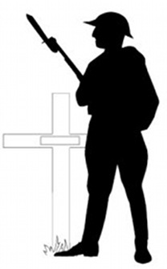

Paroisse Saint-Paul de Senneterre Feuillet paroissial du 11 au 24 novembre 2024
L’Amour
Ton cœur est une source où l’Amour peut s’écouler librement et avec générosité. L’origine de cette source est Dieu. Tu es l’instrument de cet Amour. Si tu veux, tu peux toujours être en amour, c’est-à-dire, vivre dans un état d’amour. Et ceci n’a rien à voir avec qui que ce soit autre que toi-même !
Ne recherche pas l’amour, ne recherche pas le bonheur, cherche plutôt à aimer. C’est de cette façon que tu atteindras le bonheur.
C’est lorsque tu donnes ton amour que tu es en amour et non pas lorsque tu en reçois donc si tu veux, tu peux toujours être en Amour.
Lorsque tu aimeras totalement, tu seras tout Amour ; alors la question à savoir si tu es aimé ou non ne se posera même plus.
L’Amour n’a pas de préférence. L’Amour doit couler librement, également, dans toutes les directions ; vers les gens, les animaux, la nature, soi-même. C’est la rétention de cet Amour qui est à l’origine d’un grand nombre de maladies.
Il n’y a qu’un Amour et cet Amour c’est Dieu. Lorsque je laisse cet Amour se manifester librement alors il devient partage, tolérance, prévenance, gentillesse, patience, respect, compassion et générosité.
Lorsque tu ne te sens pas toi-même, ceci est dû à une absence d’Amour en toi ; Parce que ta nature véritable et profonde, ce que tu es vraiment, c’est l’Amour.
Enlève de ton cœur toute trace de haine, de colère, d’envie et de jalousie. Alors l’Amour reprendra sa place parce que ta nature est l’Amour. Tu es Amour et avec l’Amour viennent la Paix et le Bonheur.
L’Amour c’est l’expérience de Dieu en Soi. Un instant sans Amour est un instant perdu. La douceur d’un sourire, c’est le parfum de l’Amour.
Richard Migneault
Capitation 2024
Afin de garder notre Église bien vivante, votre don est une façon de la conserver au niveau financier pour s’assurer un lieu de culte accueillant et sécuritaire.
Vous pouvez également faire vos dons via la Poste en les adressant à La Fabrique St-Paul, 700, 8e Avenue, Senneterre, J0Y 2M0.
En Flandre, quelque part sur un champ de bataille Entre nos croix de bois ont fleuri les pavots. Dans le ciel, ignorant le bruit de la mitraillette, L’alouette gaiement chante le jour nouveau.
Nous, les morts d’aujourd’hui, vivants hier encore Nous riions, nous aimions et nous étions aimés. Nous dont les yeux voyaient le couchant et l’aurore, En Flandre, quelque part, reposons à jamais.
Vous qui nous survivez, c’est à vous de reprendre Le flambeau du combat dans nos doigts décharnés. C’est un devoir sacré. Sous la terre de Flandre, Nous ne dormirons point si vous le profanez.
John McCras Médecin militaire canadien
Un ancien combattant est une personne qui, à un moment donné de sa vie, a écrit un chèque en blanc à l’ordre du « Canada » pour un montant allant jusqu’au prix de sa vie. Il y a beaucoup trop de gens dans ce pays qui ne le comprennent pas.
La prière est le plus grand cadeau que vous puissiez donner à nos jeunes engagés et pour nos troupes à travers le monde, dans les Forces armées canadiennes :
« Seigneur, protégez nos troupes en mission dans le monde. Protégez-les comme ils nous protègent tous à l’abri, dans nos foyers. Bénissez-les ainsi que leur famille pour les actes désintéressés qu’ils accomplissent pour nous. Amen »
L’Équipe de la Joie
Notre mission est d’apporter de la joie aux personnes de notre entourage, surtout celles qui sont seules ou malades, par des visites, des appels téléphoniques, en soulignant les fêtes et toutes initiatives pour contrer l’isolement de nos aînés. Nous avons besoin de bénévoles pour remplir ce mandat.
Si vous êtes intéressé(e)s à joindre l’Équipe de la Joie, vous pouvez donner votre nom au secrétariat au 819-737-2045 ou encore le 819-737-4667. Merci !
Heures d’ouverture du secrétariat
Lundi au Mercredi : 9h30 à 13h00
La vie qui nous est donnée par l’Esprit Saint est vie éternelle.
Pape François
Revenus du 21 oct. au 3 nov.
Quêtes
640,85
Prions en Église
31,60
Lampions
154,00
Capitation
1 012,44
Agenda liturgique du 10 au 24 novembre 2024
Dim 10
9h30
Messe à La Morandière
11h00
Messe à Barraute
16h00
Messe :
Le Père Gaston Letendre et Jean-Paul BlouinÉmilienne et famille Michelle GillFamille Lamoureux
Lun 11
15h00
Messe :
Parents défunts Nault et DucheminM. et Mme Martial Duchemin